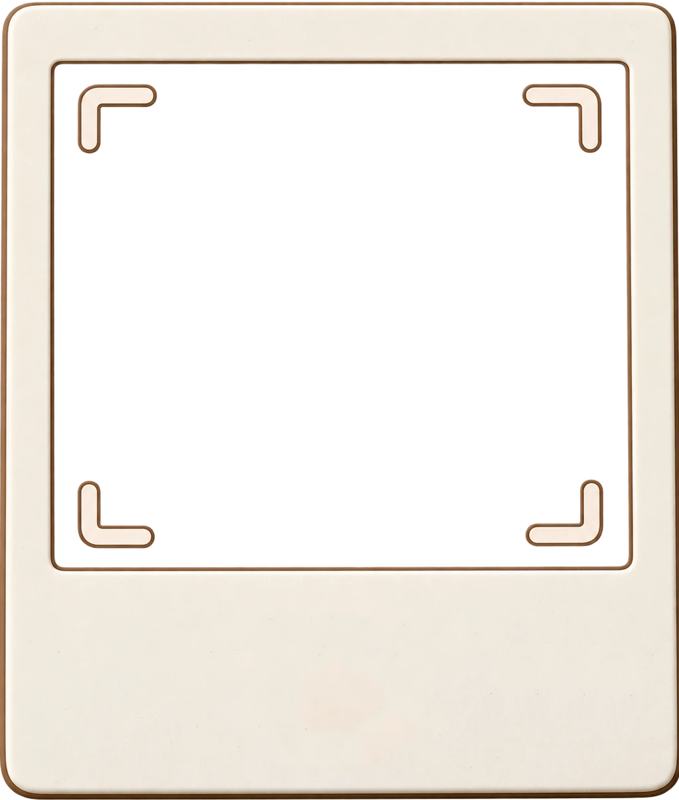
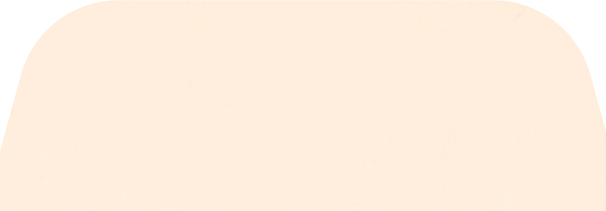
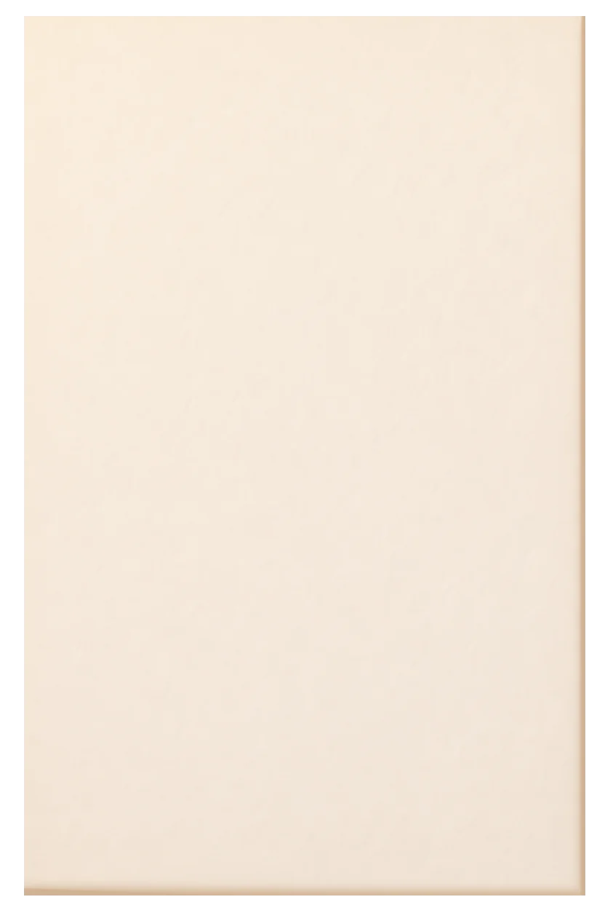

Crea recuerdos
Toma fotos, graba audios y videos. Guarda cualquier momento importante.
Toma fotos, graba audios y videos. Guarda cualquier momento importante.
No importa lo que guardaste, acá podrás revivirlo.

miembros de la familia
aún no hay miembros de la familia
borra todas las fotos, videos, grabaciones, dibujos y baúles de este teléfono
Este baúl aún no tiene fotos
toca el botón para elegir una foto
00:00
A la familia no se abandona, agrégalos :
